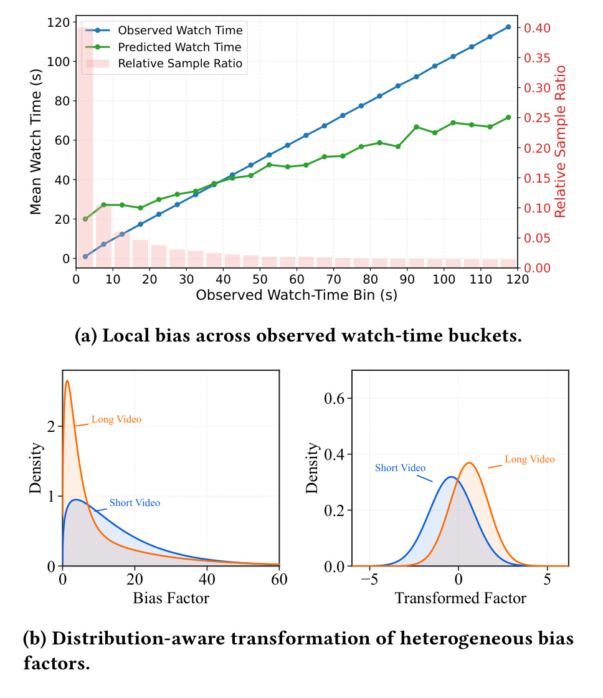
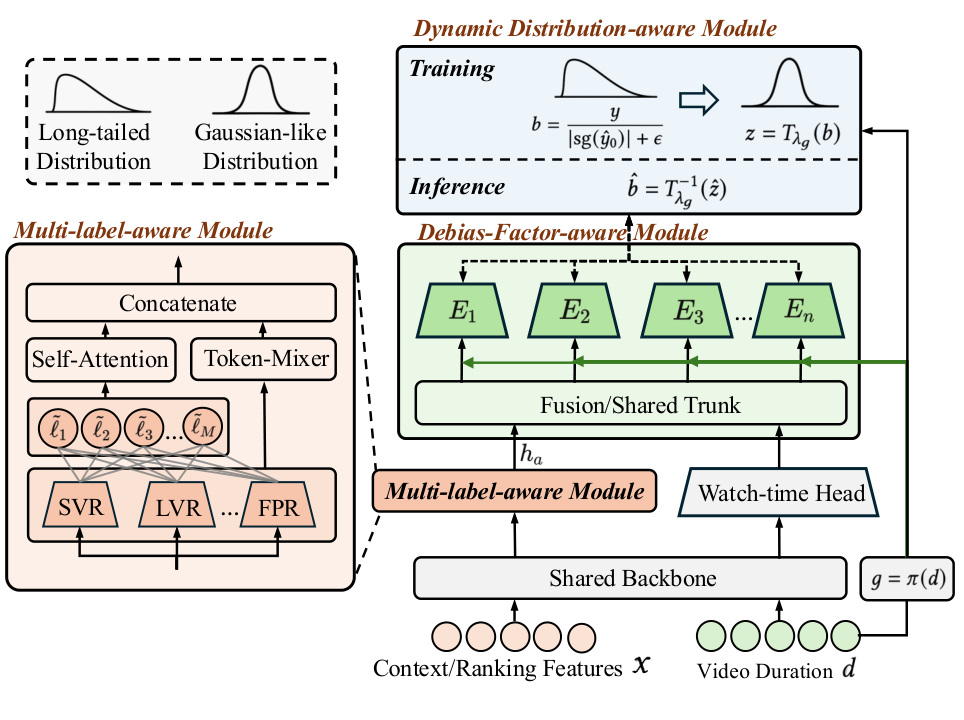
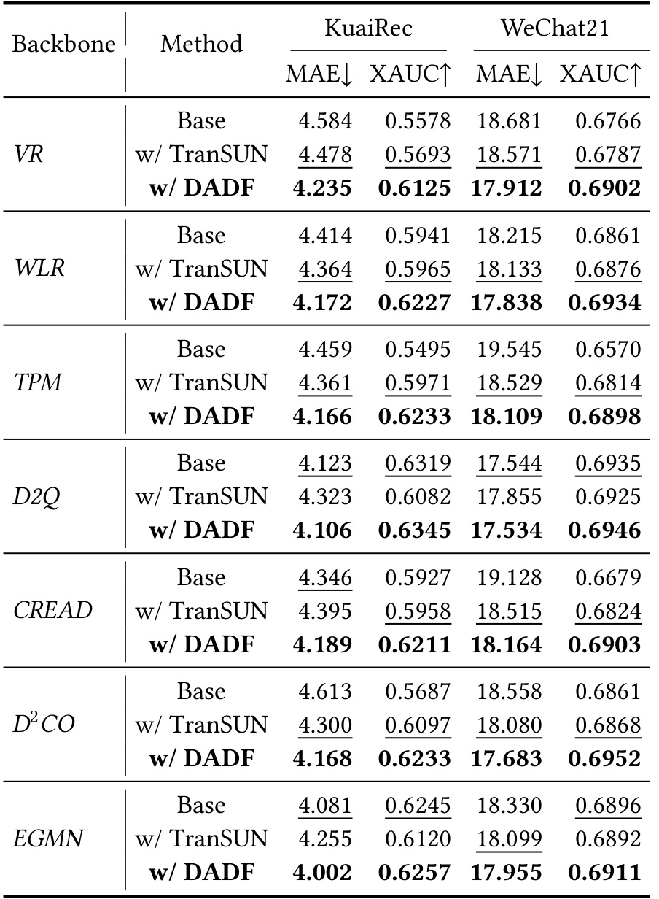
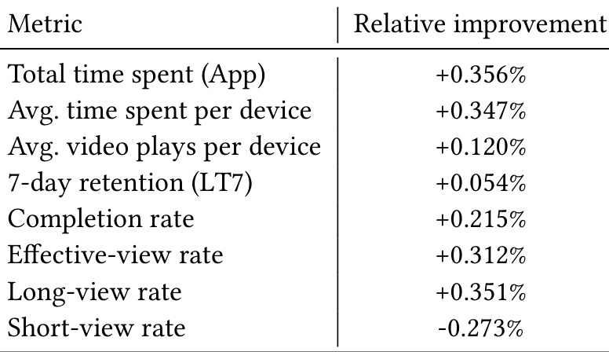
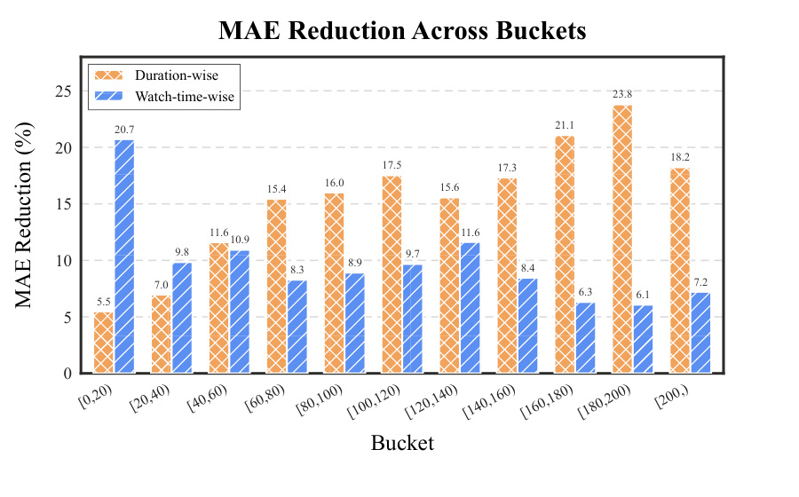

这里重新精读一篇最近公开的论文《DADF: A Distribution-Aware Debiasing Framework for Watch-Time Regression in Recommender Systems》。中文可以叫《面向短视频观看时长回归的分布感知消偏框架》。
论文链接：https://arxiv.org/abs/2605.17863 PDF：https://arxiv.org/pdf/2605.17863 代码/项目页：https://github.com/liuzhao09/DADF 公开日期：2026-05-18，来源：arXiv cs.IR / RecSys 2026 submission，arXiv ID：2605.17863。
0. 导读
这篇论文来自快手，问题非常工业：短视频推荐中的 watch-time prediction 看起来是一个普通回归任务，但实际上它有严重的长尾分布和局部校准偏差。一个模型可能全局上预测均值和真实均值接近，但在短观看区间系统性高估，在长观看区间系统性低估。由于这些误差在全局统计上会互相抵消，单看整体 calibration 或平均 ratio 会误判模型已经足够好。DADF 的思路不是推翻线上已有预测器，而是在其上叠加一个二阶段 correction model，学习一个乘法残差因子，把原始预测修正到更符合局部分布的位置。
我觉得这篇论文值得重点看两个点。第一，它把“局部校准偏差”从直觉变成了系统建模问题，尤其强调 video duration 既是 confounder，也是 residual distribution 的划分因素。第二，它给出一个可插拔的工业方案：如果线上 first-stage watch-time predictor 已经很复杂、很难整体替换，就用 DADF 做后置校准，同时利用 duration、辅助 engagement heads 和分布变换来修正长尾连续目标。
1. 背景与问题
短视频推荐里的 watch-time 是核心目标之一。相比点击率，观看时长更接近用户投入程度；相比完播率，它保留了连续强度信息。但 watch-time 也是一个非常难建模的目标：分布长尾，视频时长差异大，用户行为受内容、场景、设备、网络、时间段影响，而且 label 本身会被曝光策略和播放机制影响。
很多工业系统会把 watch-time 预测拆成主模型加若干后处理策略。主模型负责从用户、视频、上下文、历史行为中预测观看时长；后处理负责处理校准、截断、业务约束和排序融合。DADF 关注的是一个常见但不容易被指标暴露的问题：模型全局上好像没偏，但分桶看会发现短时长区域和长时长区域偏差方向相反。短视频里这种偏差很危险，因为排序系统会把 watch-time 作为收益信号，如果长视频被系统性低估，长内容会失去曝光；如果短观看被高估，低质量短消费可能被放大。
论文把这种现象称为 local calibration bias。它不是普通的 overfitting，也不是单纯 duration bias。duration 的角色也很复杂：它会影响 watch-time label 的上界，会影响用户是否完播，会影响模型残差的形态，也会影响不同 engagement heads 的关系。比如同样预测误差 5 秒，在 10 秒视频和 120 秒视频上含义完全不同。DADF 的目标就是在不替换 deployed predictor 的前提下，学习一个与局部分布、duration factor 和辅助标签相关的修正因子。
2. 核心方法
DADF 使用二阶段乘法残差校正。设 first-stage predictor 的输出为 y0_hat，DADF 学习 correction factor b_hat，最终预测为 y_hat = y0_hat * b_hat。训练时的校正标签大致对应真实 watch-time 与 stop-gradient 后 first-stage 输出的比值，即 b = y / (sg(y0_hat) + eps)。这里 stop-gradient 很重要，它避免二阶段修正器反向改变 first-stage predictor，让 DADF 成为一个真正的后置插件。
为什么是乘法而不是加法？watch-time 是长尾连续变量，不同区间的量级差异很大。对一个 5 秒预测和一个 100 秒预测，加 2 秒的含义完全不同；乘以 1.1 或 0.9 这种相对修正更符合比例偏差的直觉。乘法修正也更容易表达“某类样本整体被低估 20%”这种局部校准问题。
DADF 有三个核心模块。第一个是 Dynamic Distribution-aware Module。原始 correction factor 通常长尾、偏斜，不适合直接回归。论文使用分布感知的动态变换，把不同 bucket 或 group 下的 correction target 转成更紧凑、更接近可学习的分布。附录图里展示了 raw multiplicative factor 和 group-specific Box-Cox transformed target 的差异，说明变换后目标更集中。这个模块的本质是先把难学的残差分布变成更稳定的监督信号。
第二个是 Debias-Factor-aware Module。论文特别强调 duration 不是简单的一个输入特征，而是划分残差模式的 debias factor。不同视频时长下，用户观看行为和模型误差结构都不同。因此 DADF 用 inference-time 可见的 bias factors，尤其是 video duration，去建模异质残差模式。线上系统里这点很关键，因为修正器不能依赖未来 label，只能用推理时可见特征。
第三个是 Multi-label-aware Module。短视频系统一般不只预测 watch-time，还会有有效播放、长播、完播、播放次数等多个 engagement heads。这些辅助头能提供 watch behavior 的离散或半离散信号。DADF 把这些辅助预测也纳入修正器，让 correction factor 不只看原始 watch-time 预测和 duration，还看用户是否可能完播、是否可能长播等信息。这个设计类似把多任务模型中的其他任务输出作为校准信号。
3. 图表解读

图 1 是 DADF 的动机图。左侧按 observed watch-time bin 展示真实均值、预测均值和样本比例。关键不是模型整体预测很差，而是它在局部区域有系统误差：短观看区域和长观看区域的偏差方向不同，样本比例又高度不均衡，导致全局统计掩盖了局部问题。右侧展示 bias factor 经过分布感知变换前后的分布差异。原始 factor 在不同 duration group 下形态不同，变换后更紧凑。这个图说明 DADF 不是在追求更复杂的主模型，而是在解决“残差目标本身不好学”的问题。

图 2 是框架图。最上游是已有 watch-time predictor，DADF 不替换它，而是读入 first-stage output、context/ranking features、video duration 和多标签输出。Dynamic Distribution-aware Module 处理长尾 correction target，Debias-Factor-aware Module 建模 duration 等因素，Multi-label-aware Module 利用 SVR、LVR、FPR 等辅助信号。最终输出 correction factor，再与原预测相乘。工程上这是一种风险较低的接入方式，因为线上主模型可以保持不变，只在后面接一个轻量修正器。

表 1 是离线主结果，覆盖 KuaiRec 和 WeChat21 两个公开短视频数据集，并在 VR、WLR、TPM、D2Q、CREAD、D2CO、EGMN 等多个 backbone 上测试。指标包括 MAE 和 XAUC，分别代表点估计误差和排序一致性。表里可以看到 DADF 基本在每个 backbone 上都优于 base 和 TranSUN。例如 WLR 在 KuaiRec 上 MAE 从 4.414 降到 4.172，XAUC 从 0.5941 升到 0.6227；WeChat21 上 MAE 从 18.215 降到 17.838，XAUC 从 0.6861 升到 0.6934。这说明 DADF 的收益不是某个特定模型结构带来的，而是 correction 思路本身有通用性。

表 2 是快手线上 A/B 结果。相对 WLR-based production baseline，DADF 带来 total time spent +0.356%，average time spent per device +0.347%，average video plays per device +0.120%，7-day retention +0.054%，completion rate +0.215%，effective-view rate +0.312%，long-view rate +0.351%，short-view rate 为负向变化。这个表很重要，因为 watch-time 校准如果只是离线 MAE 变好，不一定能改善线上体验；这里多个 engagement 指标同向改善，说明局部校准确实影响了排序流量分配。

图 3 展示 duration-wise 和 watch-time-wise bucket 的 MAE reduction。不同 bucket 上都有下降，且长 duration 区域收益更明显。论文正文还提到，在长视频 tail slice 上，KuaiRec 的 MAE reduction 从全量样本的 5.48% 增加到 Tail-20% 的 9.10% 和 Tail-10% 的 10.43%。这说明 DADF 不是只在高频短视频区间做了微调，而是对长视频、稀疏区间这种更难的区域有更强帮助。对工业系统来说，这意味着它可能改善内容生态中长内容的公平曝光。
4. 实验与结果
数据集方面，KuaiRec 是快手公开的 fully observed 短视频推荐数据，包含 12,530,806 条 impression、7,176 个用户和 10,728 个视频。WeChat21 来自微信大数据挑战赛，包含 7,310,108 条交互、20,000 个用户和 96,418 个视频。KuaiRec 更适合观察较完整曝光下的行为，WeChat21 更大更稀疏，能验证方法鲁棒性。
指标方面，MAE 衡量预测值与真实 watch-time 的绝对误差，越低越好；XAUC 衡量预测 watch-time 和真实 watch-time 的顺序一致性，越高越好。工业离线还看 WUAUC，线上看总时长、人均时长、播放次数、留存、完播、有效播放、长播等用户级指标。
离线结果显示 DADF 对多种 backbone 都有效。这个结论很关键，因为如果只在一个 WLR 上有效，可能是模型结构偶然匹配；而表 1 覆盖了直接回归、加权逻辑回归、分布建模、duration-aware 方法和现有 debias 方法。相比 TranSUN，DADF 的区别在于它不只是处理 raw label 的 retransformation bias，而是处理 residual factor，并使用 group-specific distribution-aware transformation、debias factor 和 auxiliary labels。
消融实验表 3 显示，去掉 Dist、Factor 或 Aux 都会下降。以 WLR 为 backbone，Full DADF 在 KuaiRec 上 MAE 4.1723、XAUC 0.6227；去掉 distribution-aware 后 MAE 4.1901、XAUC 0.6210；去掉 factor 后 MAE 4.1823、XAUC 0.6212；去掉 auxiliary 后 MAE 4.1865、XAUC 0.6204。差距不是夸张的数量级，但方向稳定，说明三个模块都在贡献收益。
线上结果是这篇论文最强的证据。生产离线中 WUAUC 提升 1.88 个百分点，MAE 降低 12.57%；线上 A/B 中平均设备观看时长提升 0.347%。对成熟短视频推荐系统来说，0.3% 级别的人均时长提升已经是有意义的工业收益，尤其是在只加一个轻量后置校准模块的情况下。
5. 我的理解
我认为 DADF 的核心价值是把“模型误差的分布结构”作为一等对象。很多推荐论文会继续加深主模型、换 attention、换 loss，但工业系统里大量问题其实来自目标分布和残差结构。watch-time 的真实难点不是模型不会拟合，而是标签长尾、bucket 异质、duration 上界、曝光偏差、多目标冲突混在一起。DADF 的二阶段修正器很像一个专门的 residual expert，它承认主模型已经很强，但仍然有系统性局部误差需要校准。
这篇文章也对大模型系统有借鉴意义。RAG 或 LLM agent 的质量指标也常常存在全局平均掩盖局部失败的问题：某些 query 类型过度自信，某些长尾领域低估不确定性，某些用户群体体验差。DADF 的思路可以迁移成“后置质量校准器”：先让主模型输出，再根据输入类型、上下文、辅助信号预测一个修正因子或风险因子。
可能被高估的地方是，DADF 仍然依赖非常强的线上特征体系和稳定的 first-stage predictor。对于小团队或公开数据复现，缺少多标签辅助头、缺少 production WUAUC、缺少真实 A/B，可能只能复现离线 MAE/XAUC。并且二阶段修正如果缺少严格边界，很可能在某些 bucket 过度修正，放大 first-stage 的偶然误差。
6. 工程启发与复现建议
最小复现建议从 KuaiRec 或 WeChat21 开始。先训练一个简单 watch-time predictor，例如 WLR、MLP 或 TPM 风格模型，得到 y0_hat。然后固定 first-stage predictor，构造 correction label b = y / (y0_hat + eps)，按 duration 分桶观察 raw factor 的分布。如果不同 duration bucket 的 factor 分布明显不同，就说明 DADF 的动机成立。
第二步实现一个轻量 correction model。输入包括原预测值、duration、用户和视频基础特征，以及可获得的辅助任务预测。如果没有 SVR/LVR/FPR 等辅助头，可以先用 completion label、effective view label 或 watch ratio bucket 训练简单 auxiliary heads。第三步加入分布变换，可以先从 log transform 或 Box-Cox transform 做起，不必一开始完全复现论文的动态变换。
评测时不要只看全量 MAE。一定要按 observed watch-time bucket、duration bucket、长视频 tail slice、低曝光视频 slice 分组看 MAE/XAUC。线上前的离线门槛建议包括：全量 MAE 不下降、XAUC 不下降、关键长尾 bucket 改善、correction factor 有合理边界、极端 factor 占比可控。如果进入线上 A/B，要同时监控总时长、完播率、短播率、长播率、留存和内容分布，避免单纯拉长时长导致用户疲劳或内容生态偏移。
7. 局限与风险
-
二阶段修正依赖 first-stage predictor 的稳定性。如果主模型分布漂移，DADF 学到的 residual pattern 也会漂移，需要频繁更新或做在线监控。
-
乘法修正可能放大极端错误。当
y0_hat很小或接近 0 时，correction factor 容易变得不稳定，虽然论文加入eps和分布变换，但工业系统仍需要截断和保护。 -
duration 相关策略可能影响内容生态。修正长视频低估有助于公平，但如果过度，可能推高长视频曝光，改变用户消费节奏，需要和业务目标一起约束。
-
公开数据复现和线上效果之间差距较大。KuaiRec、WeChat21 缺少完整生产特征和真实多任务头，复现者很难验证 WUAUC 和 A/B 层面的收益。
-
局部校准不等于因果无偏。DADF 修正的是残差分布，不一定解决曝光选择偏差、用户自选择和推荐反馈闭环带来的因果偏差。
-
多标签辅助头可能引入目标冲突。如果辅助任务本身有偏，例如完播率偏短视频，修正器可能继承这些偏差。
8. 后续跟进
-
跟进开源代码中 duration bucket、Box-Cox 变换和 correction factor clipping 的实现。
-
对比 TranSUN、D2Q、D2CO、EGMN 等 watch-time 建模方法，判断 DADF 更适合后置校准还是可以和主模型联合训练。
-
在自己的推荐任务中检查是否存在全局 calibration 正常但 bucket calibration 异常的问题，尤其是停留时长、播放时长、阅读时长、消费金额等连续目标。
-
关注线上长期指标，例如用户留存、内容多样性、长短视频曝光结构，避免只优化短期 watch-time。